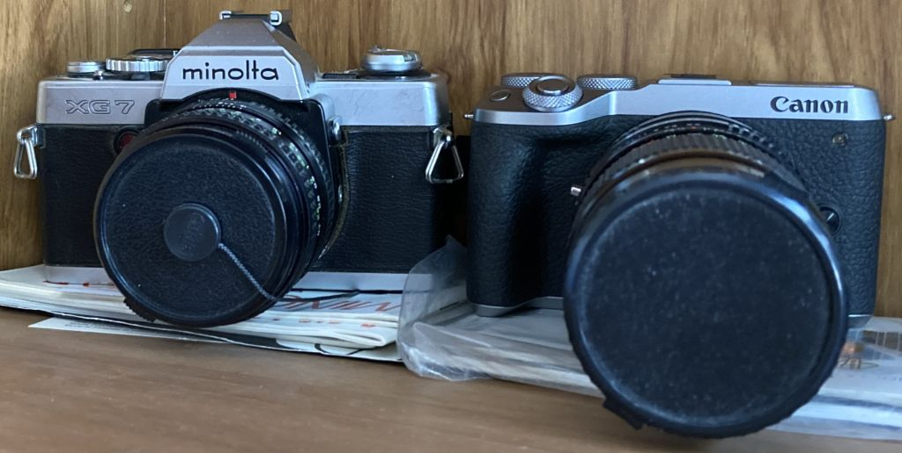
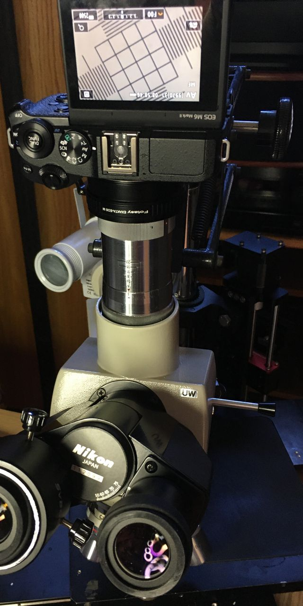
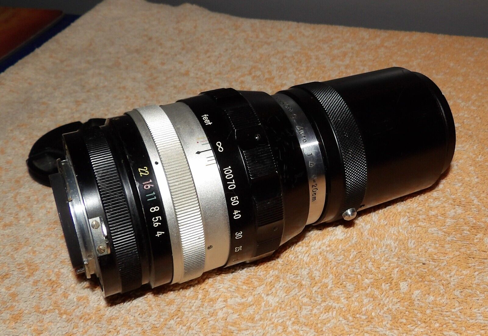
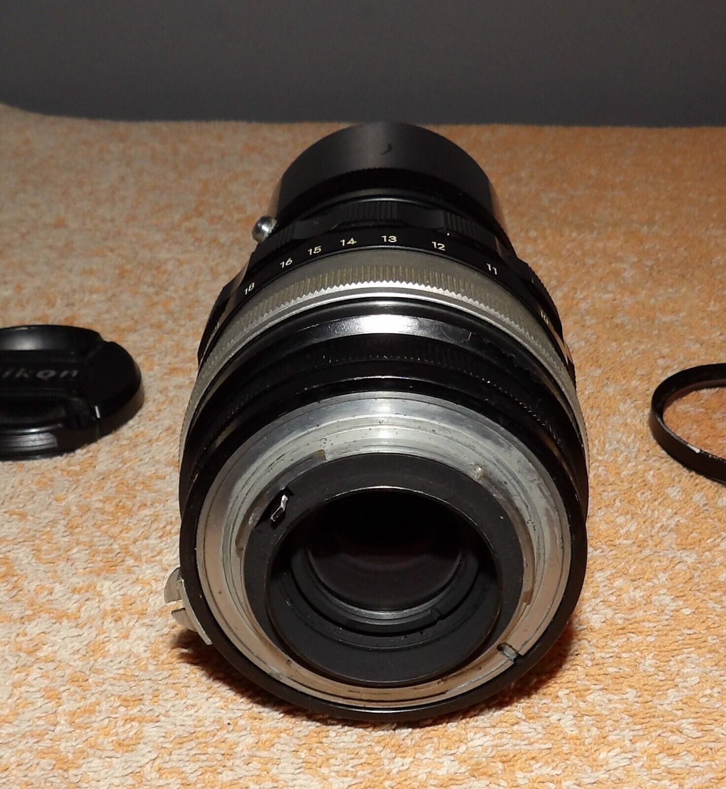
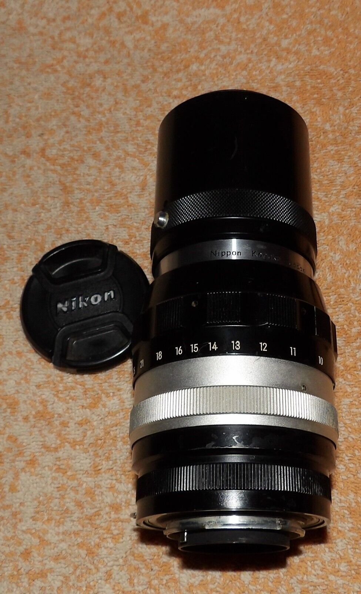
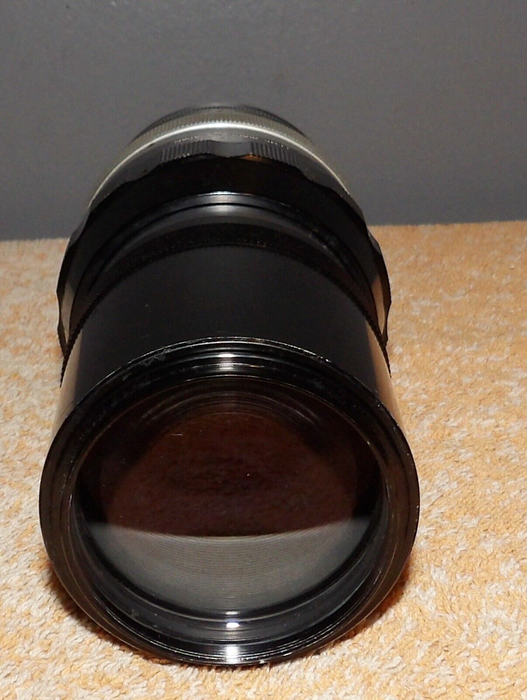
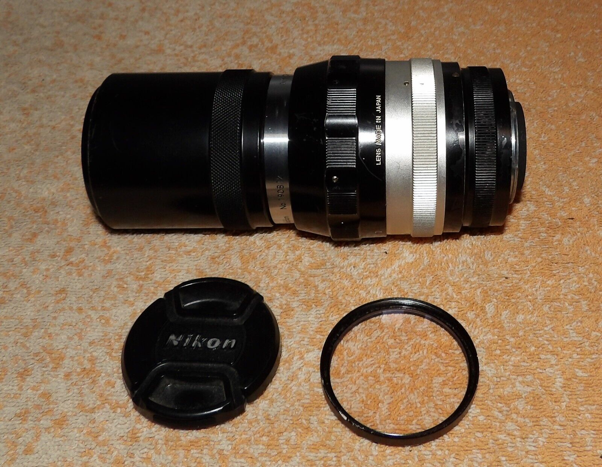
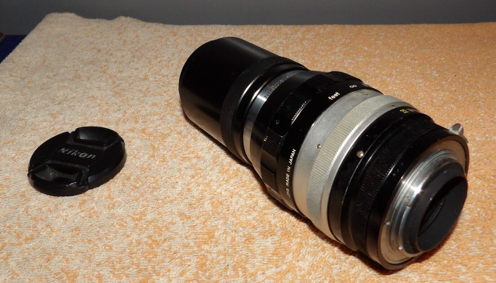
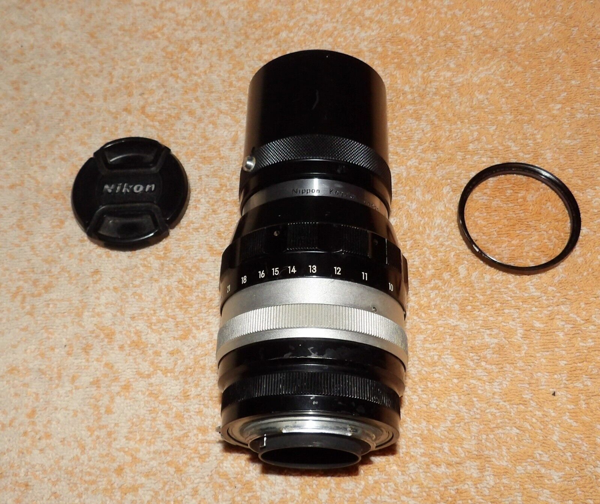

back
(Canon) cameras
My favorite film SLR was the Minolta SRT-101, because controls were as expected.
Super Takumar lenses were better, but Pentax usability was not there for me.
why Canon?
Having fully intending to eventually get some generation of 5D, APS-C satisfied
until
a 6D taught that image quality at lower light and wider angles were uncompelling (for my usages).
Canon acronyms
EOS = ElectoOptical System
EF = Electro-Focus (although some EF lenses are manual focus)
EF-S = Electro-Focus Small (APS-C)
EF-M / EOS-M = Electro-Focus Mirrorless (but only APS-C, e.g. M6 Mark II)
EOS R = Electro-Optical System Re-Imagined
RF = Re-Imagined Focus
EF, EF-S, EF-M and RF all seemingly share lens control signalling;
mounts differ mainly in diameters and sensor spacings,
but Canon blocks OEMs using RF...?
Canon M6 Mark II
Canon RS60-E3 shutter release
Carl Zeiss Jena Triotar 1:4 F=13,5cm lens
Exakta to Canon EF-M adapter
Minolta MC / MD to Canon EF-M adapter
Nikkor 200mm f4 Q
Nikon Al F Lens to Canon EOS Body Adapter
Minolta MD MC Lens to CANON EF-M EF M Mirrorless Camera M5 M6 M50 M100 Adapter
For Marshall's Minolta XG 7 lenses on Canon M6 mkII:

item: 333610065679
Condition: New
Features:
Solid metal mount allows Minolta MD MC Rokkor lens to fit on CANON EOS M EF-M Mount Mirrorless Camera
Infinity remains unchanged, so the lens does not need to be re-collimated or shimmed.
When using an adapted lens, the camera should be set to either manual exposure or aperture priority.
Automatic diaphragm, auto-focusing, or any other functions will not operate using this adapter
Adapter ring has no electrical contacts; adjust exposure and focus manually.
Compatibility:
Minolta MD MC Rokkor Lens
Fits CANON EOS M EF-M Mount Camera M1 M2 M3 M5 M6 M6 II M10 M50 M100
Package Includes:
Minolta MD MC Rokkor Lens to CANON EOS M EF-M Mount Camera Adapter x 1
The MD-mount GEMINI 135mm 1:2.8 "Macro" lens focuses no closer than 3 feet (without extension tubes).
For the Carl Zeiss Jena Triotar:
Exakta Lens to CANON EOS M EF-M Mirrorless Camera M6 Mark II M50 M100 Adapter
item: 333610056490
Condition: New
Exakta / Auto Topcon Lens to CANON EOS M EF-M Mount Camera M1, M2, M3 M5 M6 M6II M10 M50 M100 Adapter
Features:
Solid metal mount allows Exakta Auto Topcon Lens to fit on CANON EOS M EF-M Mount Mirrorless Camera
Allows Lens Focus to infinity
Meter Exposure Functions
There is no electrical contacts in the adapter ring. Exposure and focus has to be adjusted manually.
Automatic diaphragm, auto-focusing, or any other functions will not operated with using this adapter
Compatibility:
Exakta Auto Topcon Lens
Fits CANON EOS M EF-M Mount Camera M1 M2 M3 M5 M6 M6 II M10 M50 M100
Package Includes:
Exakta Auto Topcon Lens to CANON EOS M EF-M Mount Mirrorless Camera Adapter x 1
Recommended for "direct" imaging from Nikon UW trinocular photo port without chimney:
Vintage Carl Zeiss Jena Triotar Chrome Lens 1:4 F=13,5 cm
item: 155157118121
Condition: Used
Max Aperture: f/4
Series: Triotar
Focal Length: f=13,5cm
Vintage Carl Zeiss Jena Triotar Chrome Lens 1:4 F=13,5 cm.
delivered 19 Sep 2022
Tight fit with Exakta Lens to CANON EOS M adapter,
both aperture and focus rings were stiff, but relaxed with exercise.
No obvious way to mount securely in Nikon trinocular UW photo port,
but M6 mkII LCD images look very much like view with YuYan WF 10X/23 oculars,
with no perceptible CA and diagonal field cropped only about 7% from oculars' diameter.
UW prism rays are known to be not quit infinite, but best Triotar focus is at the infinity stop,
suggesting that the Exacta adapter is probably slightly deeper than ideal.
It is, however, nearly perfectly parfocal with objects.

Nikon Nikkor Non-AI 20cm (200mm) f4 Q Auto Lens
eBay item: 285096583320
For your bidding pleasure is a Nikon Nikkor Non-AI 20cm (200mm) f4 Q Auto Lens
... Estate Item - Right out of a Estate Collection ...
Nice Nikon Nikkor Non-AI 20cm (200mm) f4 Q Auto Lens
.. Lens looks to be in Nice Vintage Condition, Focus & Aperture are smooth
...Nice Nikon Nikkor Non-AI 20cm (200mm) f4 Q Auto Lens to Add to your Collection!!

|
 |
 |
 | |
 |
 |
 |
|
|